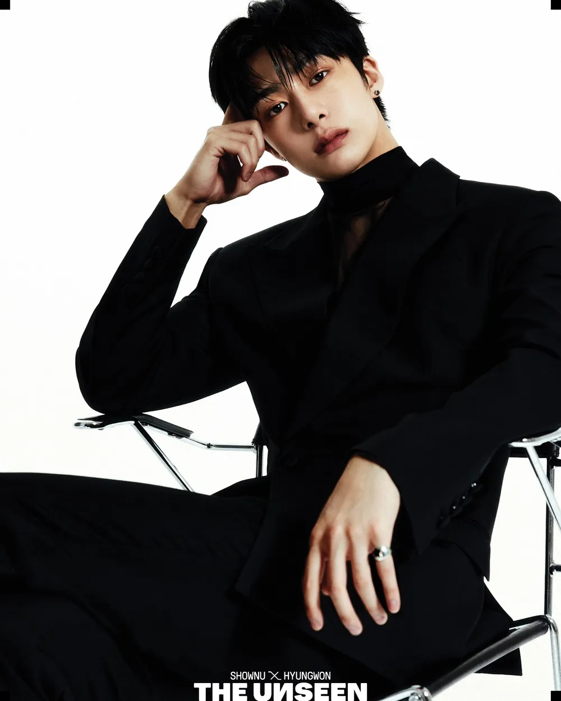

THE UNSEEN of scene
: seen
시선에 따라 달라지는 나, 진짜 내 모습은 뭘까
현실에서 보여지는 나의 말과 행동, 그리고 그 모습을 바라보는 저마다의 '시선'과 달라지는 나의 '해석'은 또 다른 '나'를 만든다.
때로는 진짜 내 모습이 무엇인지 헷갈릴 때도 있다. 타인의 시선 속에 담겨있는 수많은 "나"
수 많은 시선 속에 무뎌지던 내 마음을 자꾸만 건들이는 '너'때문인지 자꾸만 나를 의심하고 파고들고 보려한다. 타인의 시선 속에 존재하는 나의 모습또한 '나'였음을, 네가 사랑하는 너만의 '나'역시 내 모습이었음을, 기꺼이 사랑하는 너만의 내가 되기위해 노래하는 '나'도 나였음을 알았다.
너를 갈망하고 갈구한다. 내내 비워져있던 그 어딘가를 채울 수 있는 너만이 나에게 진심이 아니래도, 네게 놀아난대도 기꺼이 나를 내놓고 그저 너와 시간을 버리듯 느리게 춤을 추고 문득 지쳐 잠에 들어 매일 아침 너와 함께 눈을 뜨고 싶다. 이런 모습도 나였다.
너만이 이런 나를 사랑해준다면 기꺼이 '나'를 버리고 이런 내가 되겠다고 되뇌인다.
그러니 나를 좀 더 사랑해주길.